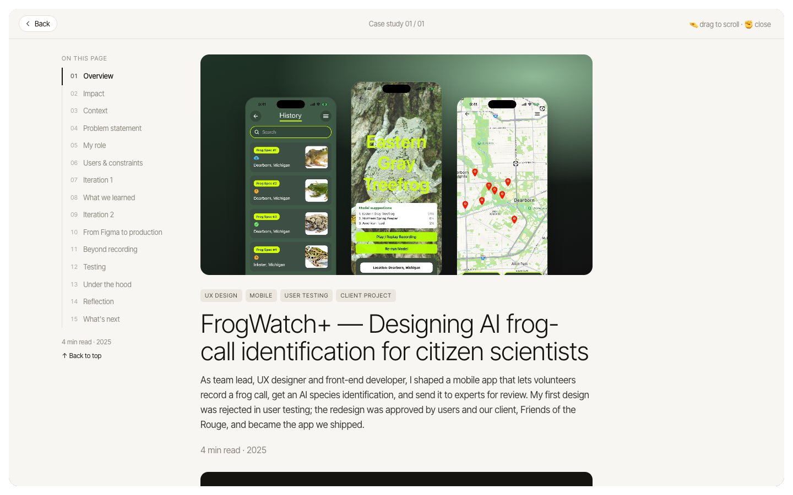
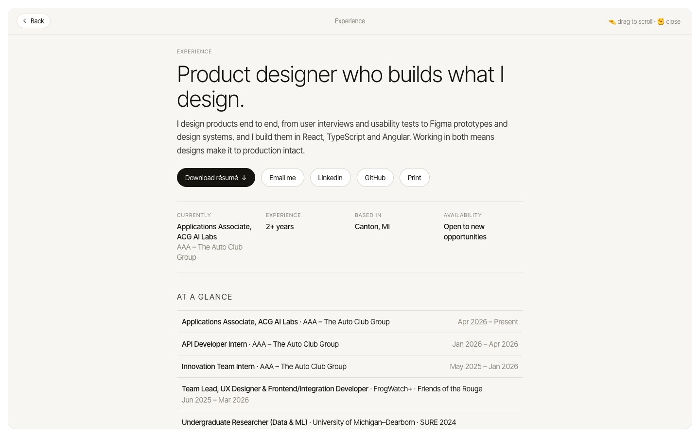

Portfolios describe interaction design. I wanted mine to be one.
A hand in front of a webcam is a noisy input: it jitters, flickers, and runs differently on every computer. Could it feel as dependable as a mouse?
Five poses, a pinch and a fist.

Shown with the camera off. With it on, live video fills the background.
Make people mean it.
A pose must be held for 0.65 seconds, with a progress bar, and fires once. A hand passing through a thumbs-up opens nothing.
Instead ofActing on the first frame
A pinch that doesn't stutter.
A pinch starts at one finger distance and ends at a wider one, so trembling fingertips can't double-click.
Instead ofA single on/off threshold
Design for the slowest laptop.
It worked on my Mac and nowhere else. I reproduced the failure at low frame rates, fixed the timing, and kept mouse and keyboard as fallbacks.
Instead ofTuning it on one fast machine

It taught me to design for input that is wrong some of the time, which is true of every camera, microphone and model.
No analytics on this site. The fix was verified in a simulation, not yet on a real slow laptop.
I tested it on the best computer it would ever run on. Now I slow things down on purpose before anyone else opens them.